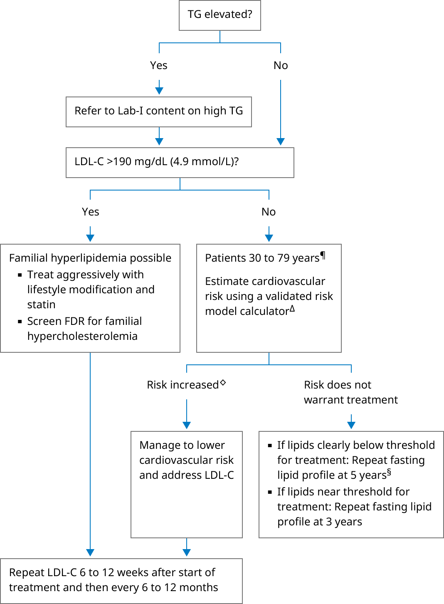

FDR: first-degree relative; HDL-C: high density lipoprotein cholesterol; LDL-C: low density lipoprotein cholesterol; TC: total cholesterol; TG: triglycerides.
* Lipid levels can vary depending on the patient population and clinical laboratory. In general:
Interpretation of a specific abnormal test result should be based upon the reference range reported with that result.
¶ For patients between ages 20 and 29 years or >79 years, perform informal risk assessment. We do not routinely use a risk calculator to perform quantitative risk estimates in these patients.
Δ Refer to UpToDate content on cardiovascular disease risk assessment in primary prevention for available risk calculators to estimate 10-year and lifetime cardiovascular disease risks.
◊ Most patients with estimated 10-year cardiovascular disease risk ≥10% or lifetime risk >39%.
§ If normal, lipid monitoring can be discontinued at age 65.